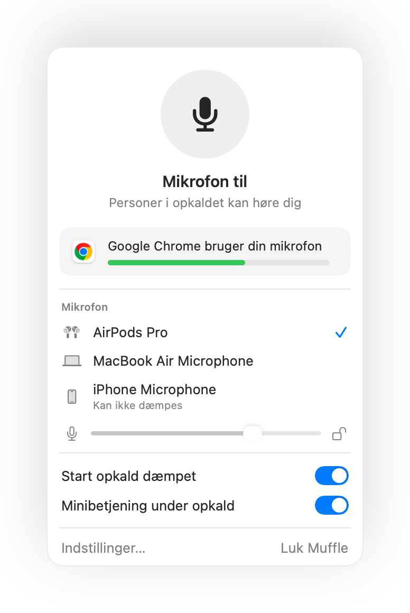
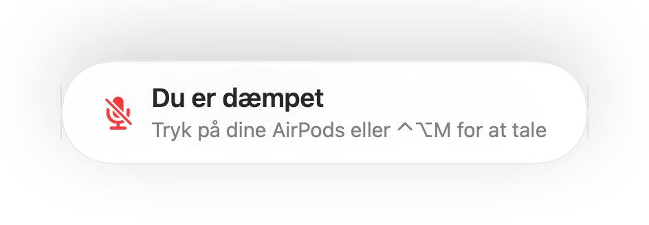
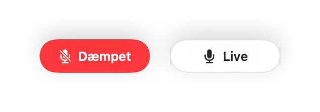
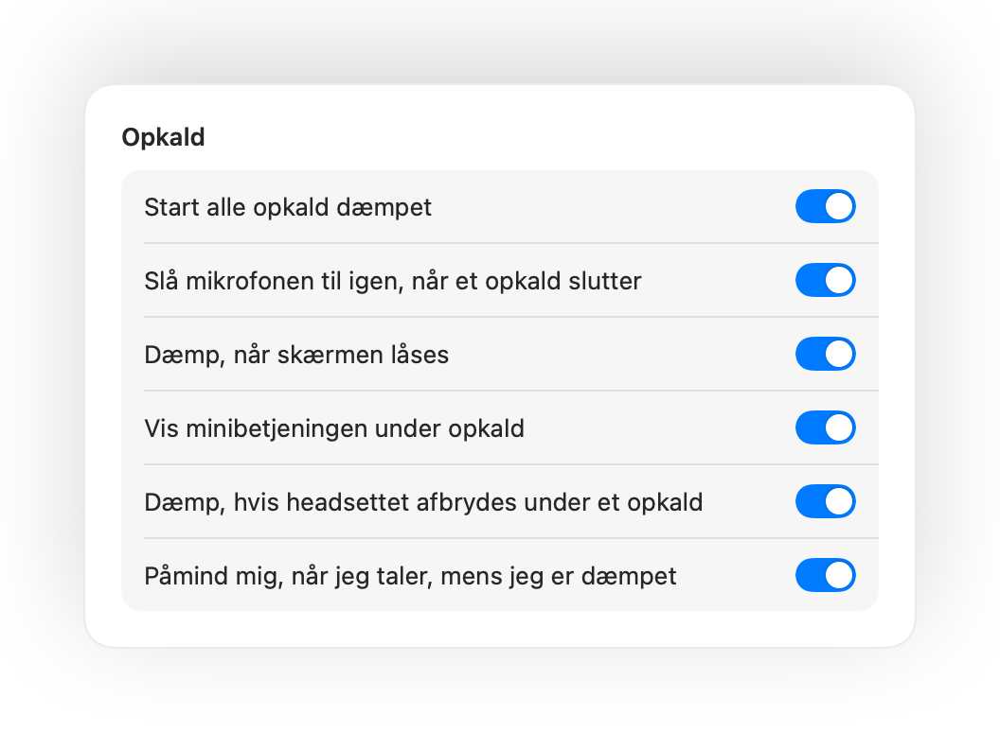

Dæmp din Mac-mikrofon fra hvor som helst.
Tryk på dine AirPods eller brug en enkelt tastaturgenvej. Muffle slukker selve mikrofonen, så Google Meet, Zoom, Teams, Slack og alle andre apps kun møder stilhed.
Gratis i 3 dage. Derefter én betaling, intet abonnement. Til macOS 14 Sonoma og nyere.

Virker med alle apps, der bruger din mikrofon
- Google Meet
- Zoom
- Microsoft Teams
- Slack
- Discord
- FaceTime
- Webex
- Skype
- SoWork
- Gather
- Chrome
- Safari
- Arc
- Edge
- Firefox
Muffle dæmper mikrofonen på hardwareniveau, så det er ligegyldigt, hvilken app, browser eller fane der bruger den.
Alt det, din Mac burde gøre under et opkald
Dæmp med et tryk på dine AirPods
Under ethvert opkald skal du trykke én gang på stilken for at dæmpe og trykke igen for at slå til. Det virker selv i Chrome, hvor Google Meet og andre webmøder ignorerer trykket på AirPods.
Én genvej til alle apps
Control-Alternativ-M dæmper dig overalt, selv når opkaldet kører i en fane i baggrunden. Hold tasten nede for at tale, mens du er dæmpet, og slip for at mute igen.
En påmindelse, når »Du er dæmpet«
Begynder du at tale, mens mikrofonen er dæmpet, giver Muffle dig besked, inden du forklarer hele din idé til absolut ingen.
Opkald på autopilot
Start alle opkald dæmpet, slå mikrofonen til igen, når et opkald slutter, og dæmp automatisk, hver gang du låser din Mac.
Fuld kontrol over din mikrofonknap
En lille flydende knap viser din mikrofonstatus under samtaler. Klik på den for at dæmpe eller slå mikrofonen til.
Dit mikrofonniveau forbliver låst
Chrome, Zoom og Teams justerer ofte din mikrofon på egen hånd. Lås niveauet, så retter Muffle det straks tilbage.
Tryghed, hvis dine høretelefoner løber tør
Hvis forbindelsen til dine AirPods eller dit headset ryger midt i et videomøde, dæmper Muffle lyden, før opkaldet skifter over til din Macs indbyggede mikrofon.
Genveje og Kontrolcenter
Dæmp fra appen Genveje, Siri, et Stream Deck, Raycast eller med en praktisk knap direkte i Kontrolcenter.



Klar på et minut
- Installer Muffle fra Mac App Store, og tillad mikrofonadgang.
- Deltag i et opkald i en vilkårlig app, præcis som du plejer.
- Tryk på dine AirPods, tryk Control-Alternativ-M, eller klik på ikonet i menulinjen for at dæmpe.
Privatliv som standard
Muffle optager, gemmer eller sender aldrig lyd. Appen tænder og slukker udelukkende din mikrofon og aflæser dens lydstyrke. Ingen konti, ingen analyseværktøjer og ingen sporing.
Spørgsmål og svar
Virker Muffle med Google Meet i Chrome?
Ja. Chrome videresender ikke dæmpetrykket fra AirPods til webopkald, så Muffle fanger trykket og dæmper selve mikrofonen. Det samme gælder for alle andre opkald i browserfaner.
Kan andre i opkaldet se, at jeg er dæmpet?
Dit opkaldsprogram viser måske stadig din mikrofon som tændt, fordi Muffle slukker selve mikrofonen frem for knappen i appen. De andre deltagere hører stilhed uanset hvad. Muffle-ikonet i menulinjen bliver rødt, når du er dæmpet.
Hvilke AirPods virker med appen?
AirPods Pro, AirPods 3 og nyere samt AirPods Max, foruden Beats-modeller med opkaldsstyring. Tastaturgenvejen og menulinjen fungerer med enhver mikrofon.
Fungerer det med Zoom, Teams, Slack og Discord?
Ja. Muffle virker med alle apps på din Mac, der bruger mikrofonen, både separate skrivebordsprogrammer og møder i browseren.
Er der tale om et abonnement?
Nej. Prøv alle funktioner gratis i 3 dage, og lås derefter op for Muffle med et enkelt engangskøb.
Hvorfor behøver Muffle adgang til mikrofonen?
macOS videresender kun tryk på AirPods til apps, der bruger mikrofonen. Muffle holder derfor en lydløs forbindelse åben under opkald. Der bliver aldrig optaget noget.
Hvad sker der, hvis jeg lukker Muffle, mens jeg er dæmpet?
Muffle slår automatisk mikrofonen til igen, når appen lukkes, så du aldrig risikerer at være låst på lydløs.
Hvilke udgaver af macOS understøttes?
macOS 14 Sonoma og nyere. Knappen til Kontrolcenter kræver macOS 26 eller nyere.
Vejledninger
- Sådan dæmper du Google Meet med AirPods på en MacDæmp Google Meet i Chrome på Mac med et tryk på dine AirPods, en genvej eller via menulinjen. Slå mikrofonen fra i alle faner.
- Sådan dæmper du Zoom med AirPods eller en genvej på en MacDæmp mikrofonen i Zoom på Mac med AirPods eller en global genvej, også når Zoom er i baggrunden. Virker i Zoom-appen og i browseren.
- Sådan dæmper du Microsoft Teams med AirPods på en MacDæmp Microsoft Teams på Mac med dine AirPods, en tastaturgenvej eller via menulinjen. Fungerer i Teams-appen og i browseren.
- Sådan dæmper du en Slack-huddle fra enhver app på en MacDæmp Slack-huddles på din Mac fra enhver app med en global genvej eller dine AirPods. Slip for at lede efter huddle-vinduet.
- Push-to-talk og en global mute-genvej til Discord på MacBrug en global push-to-talk- og mute-genvej til Discord på din Mac, eller dæmp med AirPods. Virker i Discord-appen og i browseren.
- Sådan dæmper du Webex fra enhver app på en MacDæmp Webex-møder på din Mac med en global genvej eller dine AirPods, selv når Webex ikke er det aktive vindue.
Korte, praktiske svar på, hvordan du dæmper din mikrofon på din Mac i enhver app.
Slip for at lede efter mikrofonknappen.
Muffle er gratis at prøve i 3 dage.
Kommer snart i Mac App Store